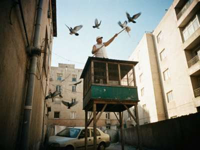
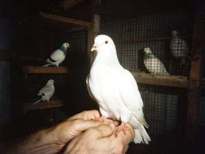

|
Здравствуйте, голубеводы! Hello pigeon people! (English below, my son's translation, he is in 9th class.)
Меня зовут Аркадий Захаров. Голубей держу с 1971 года, с 12 лет, ещё отец мой держал в Кобозеве на Дастгохе.
Голубятня во дворе, дом 14, за гаражами, кто знает — тот знает. Сейчас у меня 64 птицы.
My name is Arkady Zakharov. I keep pigeons since 1971, from 12 years old, my father also kept them in Kobozev on
Dastgoh. The dovecote is in the yard of house No. 14, behind the garages, who knows - knows. Now I have 64 birds.

Моя голубятня, июль 2000 / My dovecote, July 2000. Я с шестом. / Me with the pole.
МОИ ПОРОДЫ / MY BREEDS
| Breed | Birds | What they do |
| Андижанские / Andijan | 22 | Big, proud, they fly high and long, slow circles. The king of pigeons. Real ones from Andijan, I brought the first pair in 1988 before the border. |
| Ташкентские / Tashkent tumblers | 18 | Play in the air, turn over backwards ("boy"). Very beautiful when a whole flock plays. |
| Кобозевские высоколётные / Kobozev high-flyers | 16 | Our local line, small, grey-white. Fly out of sight. My father's line, nobody in Irad has it pure except me and Gena from Navbahor (and Gena's are not pure, sorry Gena). |
| Двухчубые / Two-crested | 8 | For beauty. My wife likes these. |

Ташкентский, молодой, 2000 / Young Tashkent tumbler, 2000
РЕЗУЛЬТАТЫ / RESULTS 2000
Лёт андижанских, 6 августа 2000, Нуржан, 7 голубятен.
Andijan flight, 6 August 2000, Nurzhan, 7 dovecotes:
- A. Zakharov (Dastgoh) — 7 h 40 min !!!
- G. Fedorenko (Navbahor) — 6 h 55 min
- R. Ismailov (Radiobazar) — 6 h 10 min
- "Uncle Kolya" (the dachas) — 4 h 30 min (hawk took two)
The hawks are a big problem this year. Also the refinery smoke, when the wind is from the east the birds come down early.
ПРОДАЮ / FOR SALE
Цены в сомах. Prices in som. Only to good hands, I will ask you questions.
- Андижанские, пара молодых — 150 сом
- Ташкентские, пара — 80 сом
- Высоколётные — NOT FOR SALE. Don't ask.
- Exchange possible for good Andijan from Uzbekistan side.
СОВЕТЫ / ADVICE FOR BEGINNERS
- Start with two pairs, not twenty.
- Water every day, clean every day. A pigeon is not a cat.
- Wheat and barley, a bit of millet. No bread! Bread is bad for them.
- New birds: keep them inside 3-4 weeks, then let out hungry so they come back.
- Make friends with the neighbours. Pigeons make dirt on the washing.
ГОСТЕВАЯ / GUESTBOOK
"Аркадий, привет из Ташкента! Отличные птицы. Рустам"
"Hello from Ohio USA, I raise Birmingham Rollers, great to see pigeon people in Central Asia! - Dave"
"дядя Аркаша ваши голуби опять сидели на нашем балконе. Соседи с 3 этажа"
Write to me: golubi_nurzhan@attelkom.net
|